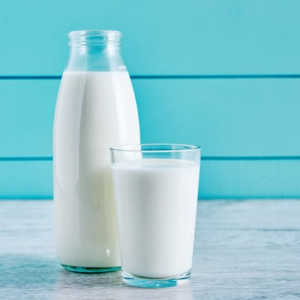
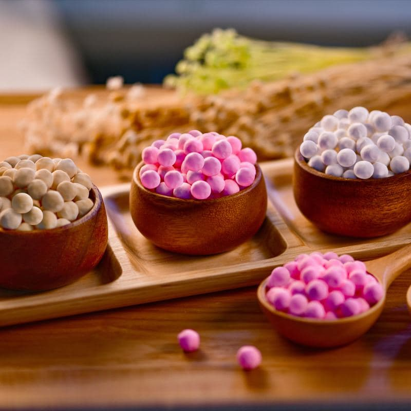
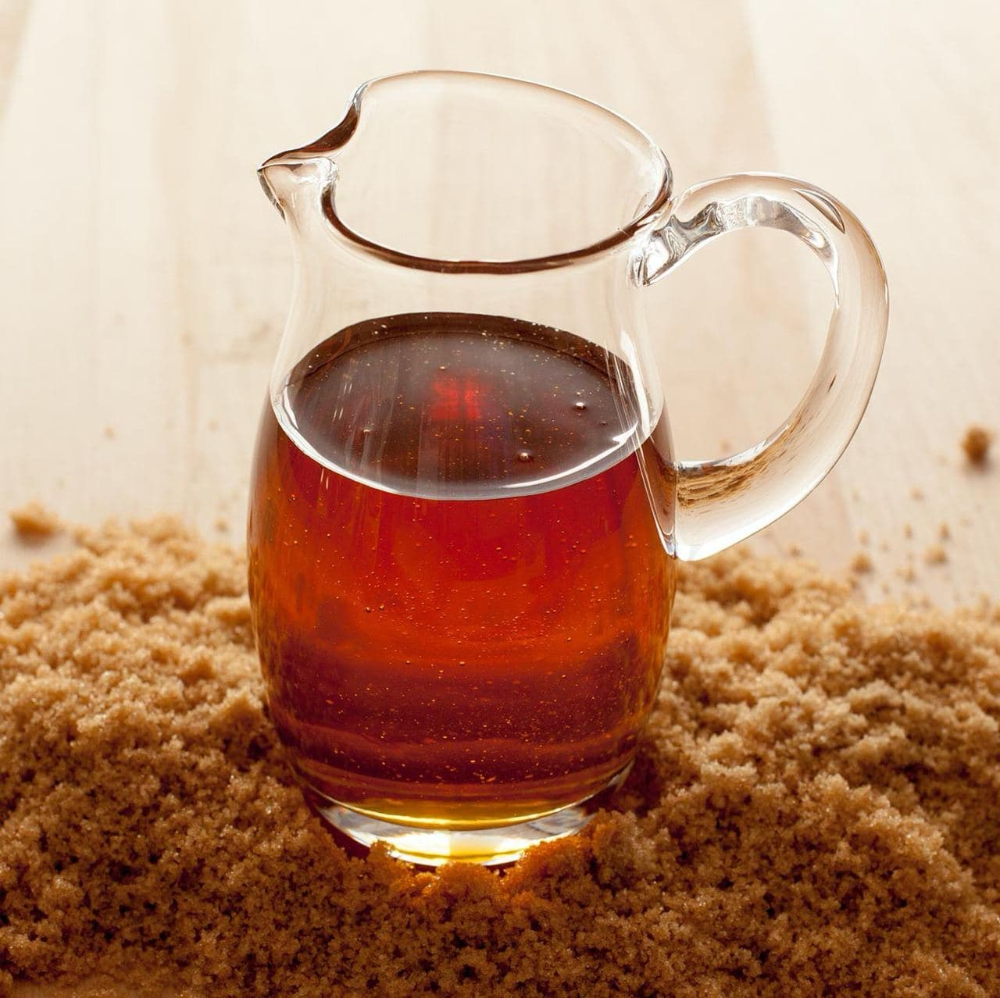

What's Boba Tea?
Boba tea, in its most classic and well known form, is simply milk tea accompanied by tapioca pearls.

The History of Boba
Before diving into the origin of boba tea, let’s start from the fundamental building block of boba tea - Shou-Yao (手搖) tea. The earliest origin of Shou-Yao tea can be traced back to the 1940s, when Chang Fan Shu (張蕃薯), a mixologist who works at an izakaya in Taiwan, invented Shou-Yao tea. Unlike how regular tea was made back in the days, Shou-Yao tea is made just like how people would make cocktails: place some ice cubes and tea into a shaker and mix it by fiercely shaking the shaker. After an intense shaking session, what comes out is a cup of iced tea, with fine, rich, velvety air foam on top. This is later known as “foam tea” (泡沫茶). Despite such an innovative invention, Shou-Yao tea did not go viral right away, as the economy in Taiwan was yet to recover from the war. It was only until the 1980s did the need for “consuming food/drinks for pleasure” start to bloom, and this is the chronological backdrop of the birth of “bubble tea.”
The real origin of “bubble tea,” or tea with tapioca balls, has been under fierce debate. However, the two most likely origins of boba tea are Han-Lin tea shop (翰林茶院), and Chun-Shui Tang (春水堂). The founder of Han-Lin tea shop, Tu Tsong He, claimed that he once had an investment failure in a hot pot restaurant and thus set on another business venture by opening another tea shop. In debt, Tu thought that for his tea shop to gain profit, it needs to be unique. Thus, he visited the Yamuliao market to look for inspiration, and he found it: putting tapioca balls into green tea. Tu found much resemblance between the translucent color of the tapioca pearls and his mother’s pearl necklace, and thus named the drink “Zen Zhu Lu Cha” (珍珠綠茶). With some experimentation with the drink, his shop, Han Lin tea shop, opened in Tainan in 1986. On the other hand, a product manager of Chun-Shui Tang, Lin Hsiu Hui, claimed that she invented bubble tea in 1988 at a staff meeting by pouring tapioca balls into black tea. Everyone fell in love with this drink at the meeting instantly, and it went onto the menu. Chun Shui Tang and Han-Lin tea shop even filed a lawsuit that lasted for 10 years against each other, just to fight for the title “founder of boba tea.” The final decision of the court? It is no use debating for such a title. Every shop could make it.
The name “boba tea,” sometimes used interchangeably with “bubble tea” or to differentiate bigger tapioca balls from the smaller ones, is believed to be coined by a hawker in Tainan, who was inspired by Amy Yip’s (a movie star) nickname “Boba” (translated as “champion of breasts”).
Boba Tea Variations
People do get creative sometimes, and such creativity has spread to boba tea. Nowadays, there are thousands and millions of variations of boba tea. Here, we’ll introduce some of the most well-known boba tea variations, and even some boba dishes!
Boba with different kinds of drinks: The tea shops in Taiwan enable an incredible extent of customization for your drinks. You could add boba pearls into virtually any drinks you like, ranging from your regular tea to fruit juice, and even to sparkling water! You name it, you get it.
Flavored boba tea: flavored during the process of making boba, either by using flavored syrup when cooking the boba or adding flavor powder when kneading the boba dough.
Popping boba: contains fruit juice in it. When one chews the coating of the popping boba, the boba bursts and releases the fruit juices in it.
Boba Chains in Different Countries
| Founded in | Range | Logo | Founded in | Range | Logo | ||
|---|---|---|---|---|---|---|---|
| Coco fresh tea and juice |
Taiwan, 1997 | Worldwide | Grand Chainly Enterprise |
Taiwan, 2003 | Europe, Asia, USA | ||
| Fanale drinks | USA | USA | Gong Cha | Taiwan, 2006 | Workdwide | ![Gong cha Logo]() |
|
| Chatime | Taiwan, 2005 | Mostly Australia | Kung Fu Tea | New York, 2009 | USA |  |
|
| Bubble Tea Supply | Hawaii, 2001 | USA | Quickly | Taiwan, 1996 | Worldwide | ||
| Fokus | Taiwan, 2009 | Worldwide | Tiger Sugar | Taiwan, 2017 | Worldwide |
What's Inside Boba Tea?
The main ingredients of a classic cup of boba tea are milk, black tea, tapioca pearls, and sugar water.
Milk
If you're lactose intolerant or can't have milk for some reason, other milk alternatives like creamers, soy milk and almond milk are good, too.
Black Tea

While the classic choice is black tea, you can substitute the tea with any other kind of tea. It might, not taste as good, though.
Tapioca Pearls
The soul of boba tea that some love and some love to hate. Nowadays there are a variety of differently flavored tapioca pearls, too!
Sugar Water
Tapioca pearls either don't taste like much at all, or have a very subtle taste (e.g. rose tapioca pearls). Thus, sugar water enhances their flavor.
How to Make Boba Tea
Now, you can try to make your own boba tea! Just like in traditional Asian cooking, there are no strict rules, so try to experiment with the ingredients until you get the perfect results!
Step 1:
Check the cooking directions on the tapioca pearl package before you start cooking the tapioca pearls in sugar water. If there are no cooking directions, boil 10 cups of sugar water. The amount of sugar is optional, but try not to get diabetes!
Step 2:
After the sugar water boils, pour in 1/2 cups of tapioca pearls, and wait until the pearls float. Then, turn the heat down to medium-low (or a corresponding heat on what you're cooking with), and let the pearls slow-cook for 20-30 minutes. You can make the black tea (or any other tea) for this recipe while the tapioca pearls are simmering.
Step 3:
When the pearls have simmered for 30 minutes, remove them from the stove and let the pearls rest for 30 minutes. Then, scoop the tapioca pearls out with a strainer, and briefly wash them with cold water.
Step 4:
Add milk to the black tea, with the milk-tea ratio according to personal preference, and add some tapioca pearls into the tea! Feel free to add any other ingredients (like fruit or bits of yam/taro) to garnish the drink. Enjoy!
Boba Tea Quiz
Now that you've gotten yourself acquainted with boba tea, it's time to test your knowledge as a boba master!